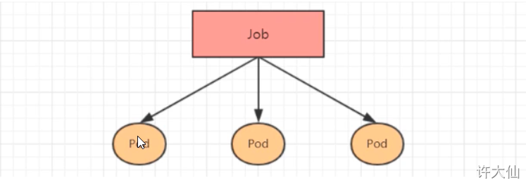

介绍
在kubernetes中，按照Pod的创建方式可以将其分为两类：
自主式Pod：kubernetes直接创建出来的Pod，这种Pod删除后就没有了，也不会重建。
控制器创建Pod：通过Pod控制器创建的Pod，这种Pod删除之后还会自动重建。
Pod控制器：Pod控制器是管理Pod的中间层，使用了Pod控制器之后，我们只需要告诉Pod控制器，想要多少个什么样的Pod就可以了，它就会创建出满足条件的Pod并确保每一个Pod处于用户期望的状态，如果Pod在运行中出现故障，控制器会基于指定的策略重启或重建Pod。
在kubernetes中，有很多类型的Pod控制器，每种都有自己的适合的场景，常见的有下面这些：
ReplicaSet：保证指定数量的Pod运行，并支持Pod数量变更。
Deployment：通过控制ReplicaSet来控制Pod，并支持滚动升级、版本回退。
Horizontal Pod Autoscaler：可以根据集群负载自动调整Pod的数量，实现削峰填谷。
DaemonSet：在集群中的指定Node上都运行一个副本，一般用于守护进程类的任务。
Job：它创建出来的Pod只要完成任务就立即退出，用于执行一次性任务。
CronJob：它创建的Pod会周期性的执行，用于执行周期性的任务。
StatefulSet：管理有状态的应用。
ReplicaSet（RS） 概述 ReplicaSet的主要作用是保证一定数量的Pod能够正常运行，它会持续监听这些Pod的运行状态，一旦Pod发生故障，就会重启或重建。
ReplicaSet的资源清单文件：
1 2 3 4 5 6 7 8 9 10 11 12 13 14 15 16 17 18 19 20 21 22 23 24 apiVersion: apps/v1 kind: ReplicaSet metadata: name: namespace: labels: controller: rs spec: replicas: 3 selector: matchLabels: app: nginx-pod matchExpressions: - {key: app , operator: In , values: [nginx-pod ]} template: metadata: labels: app: nginx-pod spec: containers: - name: nginx image: nginx:1.17.1 ports: - containerPort: 80
在这里，需要新了解的配置项就是spec下面几个选项:
replicas：指定副本数量，其实就是当然rs创建出来的Pod的数量，默认为1.
selector：选择器，它的作用是建立Pod控制器和Pod之间的关联关系，采用了Label Selector机制（在Pod模块上定义Label，在控制器上定义选择器，就可以表明当前控制器能管理哪些Pod了）。
template：模板，就是当前控制器创建Pod所使用的模板，里面其实就是前面学过的Pod的定义。
创建ReplicaSet 创建pc-replicaset.yaml文件，内容如下：
1 2 3 4 5 6 7 8 9 10 11 12 13 14 15 16 17 18 19 20 apiVersion: apps/v1 kind: ReplicaSet metadata: name: pc-replicaset namespace: dev spec: replicas: 3 selector: matchLabels: app: nginx-pod template: metadata: labels: app: nginx-pod spec: containers: - name: nginx image: nginx:1.17.1 ports: - containerPort: 80
1 2 3 4 5 6 7 8 # 创建 kubectl create -f pc-replicaset.yaml # 查看 kubectl get rs pc-replicaset -n dev -o wide # 查看当前控制器创建出来的Pod（控制器创建出来的Pod的名称是在控制器名称后面拼接了-xxx随机码） kubectl get pod -n dev
扩缩容 编辑rs的副本数量，修改spec:replicas:6即可。
1 kubectl edit rs pc-replicaset -n dev
使用scale命令实现扩缩容，后面加上–replicas=n直接指定目标数量即可
1 kubectl scale rs pc-replicaset --replicas=2 -n dev
删除ReplicaSet 使用kubectl delete rs 命令会删除ReplicaSet和其管理的Pod
1 2 3 4 5 6 7 8 # 在kubernetes删除ReplicaSet前，会将ReplicaSet的replicas调整为0，等到所有的Pod被删除后，再执行ReplicaSet对象的删除 kubectl delete rs pc-replicaset -n dev # 如果希望仅仅删除ReplicaSet对象（保留Pod），只需要在使用kubectl delete rs命令的时候添加--cascade=false 选项（不推荐）： kubectl delete rs pc-replicaset -n dev --cascade=false # 使用yaml直接删除（推荐）： kubectl delete -f pc-replicaset.yaml
Deployment 概要 为了更好的解决服务编排的问题，kubernetes在v1.2版本开始，引入了Deployment控制器。
Deployment的主要功能如下：
支持ReplicaSet的所有功能
支持发布的停止、继续
支持版本滚动更新和版本回退
Deployment的资源清单：
1 2 3 4 5 6 7 8 9 10 11 12 13 14 15 16 17 18 19 20 21 22 23 24 25 26 27 28 29 30 31 apiVersion: apps/v1 kind: Deployment metadata: name: namespace: labels: controller: deploy spec: replicas: 3 revisionHistoryLimit: 3 paused: false progressDeadlineSeconds: 600 strategy: type: RollingUpdate rollingUpdate: maxSurge: 30 % selector: matchLabels: app: nginx-pod matchExpressions: - {key: app , operator: In , values: [nginx-pod ]} template: metadata: labels: app: nginx-pod spec: containers: - name: nginx image: nginx:1.17.1 ports: - containerPort: 80
创建Deployment 创建pc-deployment.yaml文件，内容如下：
1 2 3 4 5 6 7 8 9 10 11 12 13 14 15 16 17 18 19 20 apiVersion: apps/v1 kind: Deployment metadata: name: pc-deployment namespace: dev spec: replicas: 3 selector: matchLabels: app: nginx-pod template: metadata: labels: app: nginx-pod spec: containers: - name: nginx image: nginx:1.17.1 ports: - containerPort: 80
1 2 3 4 5 6 7 8 9 10 11 12 # 创建 kubectl create -f pc-deployment.yaml # 查看 # UP-TO-DATE 最新版本的Pod数量 # AVAILABLE 当前可用的Pod数量 kubectl get deploy pc-deployment -n dev # 查看ReplicaSet： kubectl get rs -n dev # 查看Pod kubectl get pod -n dev
扩散容 编辑Deployment的副本数量，修改spec:replicas:4即可
1 kubectl edit deployment pc-deployment -n dev
使用scale命令实现扩缩容：
1 kubectl scale deploy pc-deployment --replicas=5 -n dev
镜像更新 概要 Deployment支持两种镜像更新的策略：重建更新和滚动更新（默认），可以通过strategy选项进行配置
1 2 3 4 5 6 7 8 strategy: 指定新的Pod替代旧的Pod的策略，支持两个属性 type: 指定策略类型，支持两种策略 Recreate：在创建出新的Pod之前会先杀掉所有已经存在的Pod RollingUpdate：滚动更新，就是杀死一部分，就启动一部分，在更新过程中，存在两个版本的Pod rollingUpdate：当type为RollingUpdate的时候生效，用于为rollingUpdate设置参数，支持两个属性： maxUnavailable：用来指定在升级过程中不可用的Pod的最大数量，默认为25%。 maxSurge： 用来指定在升级过程中可以超过期望的Pod的最大数量，默认为25%。
重建更新 编辑pc-deployment.yaml文件，在spec节点下添加更新策略
1 2 3 4 5 6 7 8 9 10 11 12 13 14 15 16 17 18 19 20 21 22 apiVersion: apps/v1 kind: Deployment metadata: name: pc-deployment namespace: dev spec: replicas: 3 strategy: type: Recreate selector: matchLabels: app: nginx-pod template: metadata: labels: app: nginx-pod spec: containers: - name: nginx image: nginx:1.17.1 ports: - containerPort: 80
1 2 3 4 5 6 7 8 # 更新 kubectl apply -f pc-deployment.yaml # 镜像升级 kubectl set image deployment pc-deployment nginx=nginx:1.17.2 -n dev # 查看 kubectl get pod -n dev -w
滚动更新 编辑pc-deployment.yaml文件，在spec节点下添加更新策略：
1 2 3 4 5 6 7 8 9 10 11 12 13 14 15 16 17 18 19 20 21 22 23 24 25 apiVersion: apps/v1 kind: Deployment metadata: name: pc-deployment namespace: dev spec: replicas: 3 strategy: type: RollingUpdate rollingUpdate: maxUnavailable: 25 % maxSurge: 25 % selector: matchLabels: app: nginx-pod template: metadata: labels: app: nginx-pod spec: containers: - name: nginx image: nginx:1.17.1 ports: - containerPort: 80
1 2 3 4 5 6 7 8 9 10 11 12 # 更新 kubectl apply -f pc-deployment.yaml # 镜像升级 kubectl set image deployment pc-deployment nginx=nginx:1.17.3 -n dev # 查看 kubectl get pod -n dev -w # 查看rs，发现原来的rs依旧存在，只是Pod的数量变为0，而后又产生了一个rs，Pod的数量变为3 # 其实这就是deployment能够进行版本回退的奥妙所在 kubectl get rs -n dev
滚动更新的过程:
版本回退 Deployment支持版本升级过程中的暂停、继续功能以及版本回退等诸多功能，下面具体来看：
1 2 3 4 5 6 7 8 kubetl rollout 参数 deploy xx
1 2 3 4 5 6 7 8 9 # 查看当前升级版本的状态 kubectl rollout status deployment pc-deployment -n dev # 查看升级历史记录 kubectl rollout history deployment pc-deployment -n dev # 版本回退 # 可以使用-to-revision=1回退到1版本，如果省略这个选项，就是回退到上个版本，即2版本 kubectl rollout undo deployment pc-deployment --to-revision=1 -n dev
删除Deployment 删除Deployment，其下的ReplicaSet和Pod也会一起被删除：
1 kubectl delete -f pc-deployment.yaml
Horizontal Pod Autoscaler （HPA） 概述 我们已经可以通过手动执行kubectl scale命令实现Pod的扩缩容，但是这显然不符合kubernetes的定位目标–自动化和智能化。
HPA可以获取每个Pod的利用率，然后和HPA中定义的指标进行对比，同时计算出需要伸缩的具体值，最后实现Pod的数量的调整。
安装metrics-server
HPA需要通过监控数据进行计算是否需要扩所容
1 2 3 4 5 6 7 8 9 10 11 12 13 wget https://github.com/kubernetes-sigs/metrics-server/releases/download/v0.4.1/components.yaml # spec.template.spec.containers.args 添加 - --kubelet-insecure-tls # 修改国内image registry.aliyuncs.com/google_containers/metrics-server:v0.4.1 # 创建 kubectl apply -f components.yaml # 查看 kubectl get deployment metrics-server -n kube-system
准备Deployment和Service 创建Deployment, nginx.yaml
1 2 3 4 5 6 7 8 9 10 11 12 13 14 15 16 17 18 19 20 21 22 apiVersion: apps/v1 kind: Deployment metadata: name: nginx namespace: dev spec: selector: matchLabels: app: nginx-pod template: metadata: labels: app: nginx-pod spec: containers: - name: nginx image: nginx:1.17.1 ports: - containerPort: 80 resources: requests: cpu: "100m"
1 2 3 4 kubectl create -f nginx.yaml # 查看 kubectl get pod,deploy -n dev
创建Service
1 2 3 4 kubectl expose deployment nginx --name=nginx --type=NodePort --port=80 --target-port=80 -n dev # 查看 kubectl get svc -n dev
部署HPA 创建pc-hpa.yaml文件，内容如下：
1 2 3 4 5 6 7 8 9 10 11 12 13 apiVersion: autoscaling/v1 kind: HorizontalPodAutoscaler metadata: name: pc-hpa namespace: dev spec: minReplicas: 1 maxReplicas: 10 targetCPUUtilizationPercentage: 3 scaleTargetRef: apiVersion: apps/v1 kind: Deployment name: nginx
1 2 3 4 5 # 创建hpa kubectl create -f pc-hpa.yaml # 查看 kubectl get hpa -n dev
测试 1 2 # 不断访问nginx服务，让cpu使用率高于3% while true;do curl 172.16.7.200:30370 > /dev/null;sleep 0.01s;done
cpu使用率上升，副本数量口容到3
1 2 3 4 5 # 查看deployment kubectl get deploy -n dev # 查看详情 kubectl describe deploy nginx -n dev
DaemonSet（DS） 概述 DaemonSet类型的控制器可以保证集群中的每一台（或指定）节点上都运行一个副本，一般适用于日志收集、节点监控等场景。
每向集群中添加一个节点的时候，指定的Pod副本也将添加到该节点上。
当节点从集群中移除的时候，Pod也会被垃圾回收。
DaemonSet的资源清单：
1 2 3 4 5 6 7 8 9 10 11 12 13 14 15 16 17 18 19 20 21 22 23 24 25 26 27 28 29 30 31 apiVersion: apps/v1 kind: DaemonSet metadata: name: namespace: labels: controller: daemonset spec: revisionHistoryLimit: 3 updateStrategy: type: RollingUpdate rollingUpdate: maxUnavailable: 1 selector: matchLabels: app: nginx-pod matchExpressions: - key: app operator: In values: - nginx-pod template: metadata: labels: app: nginx-pod spec: containers: - name: nginx image: nginx:1.17.1 ports: - containerPort: 80
创建DaemonSet 创建pc-daemonset.yaml文件，内容如下：
1 2 3 4 5 6 7 8 9 10 11 12 13 14 15 16 17 18 19 apiVersion: apps/v1 kind: DaemonSet metadata: name: pc-damonset namespace: dev spec: selector: matchLabels: app: nginx-pod template: metadata: labels: app: nginx-pod spec: containers: - name: nginx image: nginx:1.17.1 ports: - containerPort: 80
1 2 3 4 5 6 7 kubectl create -f pc-daemonset.yaml # 查看 kubectl get ds -n dev -o wide # 删除 kubectl delete ds pc-damonset -n dev
Job 概要 Job主要用于负责批量处理短暂的一次性任务
当Job创建的Pod执行成功结束时，Job将记录成功结束的Pod数量。
当成功结束的Pod达到指定的数量时，Job将完成执行。

1 2 3 4 5 6 7 8 9 10 11 12 13 14 15 16 17 18 19 20 21 22 23 24 25 26 27 28 29 30 31 apiVersion: batch/v1 kind: Job metadata: name: namespace: labels: controller: job spec: completions: 1 parallelism: 1 activeDeadlineSeconds: 30 backoffLimit: 6 manualSelector: true selector: matchLabels: app: counter-pod matchExpressions: - key: app operator: In values: - counter-pod template: metadata: labels: app: counter-pod spec: restartPolicy: Never containers: - name: counter image: busybox:1.30 command: ["/bin/sh" ,"-c" ,"for i in 9 8 7 6 5 4 3 2 1;do echo $i;sleep 20;done" ]
关于模板中的重启策略的说明：
如果设置为OnFailure，则Job会在Pod出现故障的时候重启容器，而不是创建Pod，failed次数不变。
如果设置为Never，则Job会在Pod出现故障的时候创建新的Pod，并且故障Pod不会消失，也不会重启，failed次数+1。
如果指定为Always的话，就意味着一直重启，意味着Pod任务会重复执行，这和Job的定义冲突，所以不能设置为Always。
创建pc-job.yaml文件，内容如下：
1 2 3 4 5 6 7 8 9 10 11 12 13 14 15 16 17 18 19 20 apiVersion: batch/v1 kind: Job metadata: name: pc-job namespace: dev spec: manualSelector: true selector: matchLabels: app: counter-pod template: metadata: labels: app: counter-pod spec: restartPolicy: Never containers: - name: counter image: busybox:1.30 command: [ "/bin/sh" ,"-c" ,"for i in 9 8 7 6 5 4 3 2 1;do echo $i;sleep 3;done" ]
1 2 3 4 5 6 7 8 kubectl create -f pc-job.yaml # 查看 kubectl get job -n dev -w kubectl get pod -n dev -w # 删除 kubectl delete -f pc-job.yaml
CronJob CronJob控制器以Job控制器为其管控对象，并借助它管理Pod资源对象，Job控制器定义的作业任务在其控制器资源创建之后便会立即执行，
1 2 3 4 5 6 7 8 9 10 11 12 13 14 15 16 17 18 19 20 21 22 23 24 25 26 apiVersion: batch/v1beta1 kind: CronJob metadata: name: namespace: labels: controller: cronjob spec: schedule: concurrencyPolicy: failedJobsHistoryLimit: successfulJobsHistoryLimit: jobTemplate: metadata: {} spec: completions: 1 parallelism: 1 activeDeadlineSeconds: 30 backoffLimit: 6 template: spec: restartPolicy: Never containers: - name: counter image: busybox:1.30 command: [ "/bin/sh" ,"-c" ,"for i in 9 8 7 6 5 4 3 2 1;do echo $i;sleep 20;done" ]
schedule：cron表达式，用于指定任务的执行时间。
*/1 * * * *：表示分钟 小时 日 月份 星期。
分钟的值从0到59。
小时的值从0到23。
日的值从1到31。
月的值从1到12。
星期的值从0到6，0表示星期日。
多个时间可以用逗号隔开，范围可以用连字符给出：* 可以作为通配符，/表示每…
concurrencyPolicy：并发执行策略
Allow：运行Job并发运行（默认）。
Forbid：禁止并发运行，如果上一次运行尚未完成，则跳过下一次运行。
Replace：替换，取消当前正在运行的作业并使用新作业替换它。
创建pc-cronjob.yaml文件，内容如下：
1 2 3 4 5 6 7 8 9 10 11 12 13 14 15 16 17 apiVersion: batch/v1beta1 kind: CronJob metadata: name: pc-cronjob namespace: dev spec: schedule: "*/1 * * * * " jobTemplate: metadata: {} spec: template: spec: restartPolicy: Never containers: - name: counter image: busybox:1.30 command: [ "/bin/sh" ,"-c" ,"for i in 9 8 7 6 5 4 3 2 1;do echo $i;sleep 2;done" ]
1 2 3 4 5 6 7 8 9 10 # 创建 kubectl create -f pc-cronjob.yaml # 查看 kubectl get cronjob -n dev -w kubectl get job -n dev -w kubectl get pod -n dev -w # 删除 kubectl delete -f pc-cronjob.yaml
StatefulSet 概述 无状态应用：
认为Pod都是一样的。
没有顺序要求。
不用考虑在哪个Node节点上运行。
随意进行伸缩和扩展。
有状态应用：
有顺序的要求。
认为每个Pod都是不一样的。
需要考虑在哪个Node节点上运行。
需要按照顺序进行伸缩和扩展。
让每个Pod都是独立的，保持Pod启动顺序和唯一性。
StatefulSet是Kubernetes提供的管理有状态应用的负载管理控制器
StatefulSet部署需要HeadLinessService（无头服务）
为什么需要HeadLinessService（无头服务）？
在用Deployment时，每一个Pod名称是没有顺序的，是随机字符串，因此是Pod名称是无序的，但是在StatefulSet中要求必须是有序 ，每一个Pod不能被随意取代，Pod重建后pod名称还是一样的。
而Pod IP是变化的，所以是以Pod名称来识别。Pod名称是Pod唯一性的标识符，必须持久稳定有效。这时候要用到无头服务，它可以给每个Pod一个唯一的名称 。
StatefulSet常用来部署RabbitMQ集群、Zookeeper集群、MySQL集群、Eureka集群等。
演示 创建pc-stateful.yaml文件，内容如下：
1 2 3 4 5 6 7 8 9 10 11 12 13 14 15 16 17 18 19 20 21 22 23 24 25 26 27 28 29 30 31 32 33 34 35 36 apiVersion: v1 kind: Service metadata: name: service-headliness namespace: dev spec: selector: app: nginx-pod clusterIP: None type: ClusterIP ports: - port: 80 targetPort: 80 --- apiVersion: apps/v1 kind: StatefulSet metadata: name: pc-statefulset namespace: dev spec: replicas: 3 serviceName: service-headliness selector: matchLabels: app: nginx-pod template: metadata: labels: app: nginx-pod spec: containers: - name: nginx image: nginx:1.17.1 ports: - containerPort: 80
1 2 3 4 5 6 kubectl create -f pc-stateful.yaml kubectl get statefulset pc-statefulset -n dev -o wide kubectl get pod -n dev -o wide kubectl delete -f pc-stateful.yaml
Deployment和StatefulSet的区别
Deployment和StatefulSet的区别：Deployment没有唯一标识而StatefulSet有唯一标识。
StatefulSet的唯一标识是根据主机名+一定规则生成的。
StatefulSet的唯一标识是主机名.无头Service名称.命名空间.svc.cluster.local
StatefulSet的金丝雀发布 StatefulSet支持两种更新策略：OnDelete和RollingUpdate（默认），其中OnDelete表示删除之后才更新，RollingUpdate表示滚动更新。
1 2 3 4 updateStrategy: rollingUpdate: partition: 2 type: RollingUpdate /OnDelete
示例：pc-statefulset.yaml
1 2 3 4 5 6 7 8 9 10 11 12 13 14 15 16 17 18 19 20 21 22 23 24 25 26 27 28 29 30 31 32 33 34 35 36 37 38 39 40 41 apiVersion: v1 kind: Service metadata: name: service-headliness namespace: dev spec: selector: app: nginx-pod clusterIP: None type: ClusterIP ports: - port: 80 targetPort: 80 --- apiVersion: apps/v1 kind: StatefulSet metadata: name: pc-statefulset namespace: dev spec: replicas: 3 serviceName: service-headliness selector: matchLabels: app: nginx-pod template: metadata: labels: app: nginx-pod spec: containers: - name: nginx image: nginx:1.17.1 ports: - containerPort: 80 updateStrategy: rollingUpdate: partition: 0 type: RollingUpdate